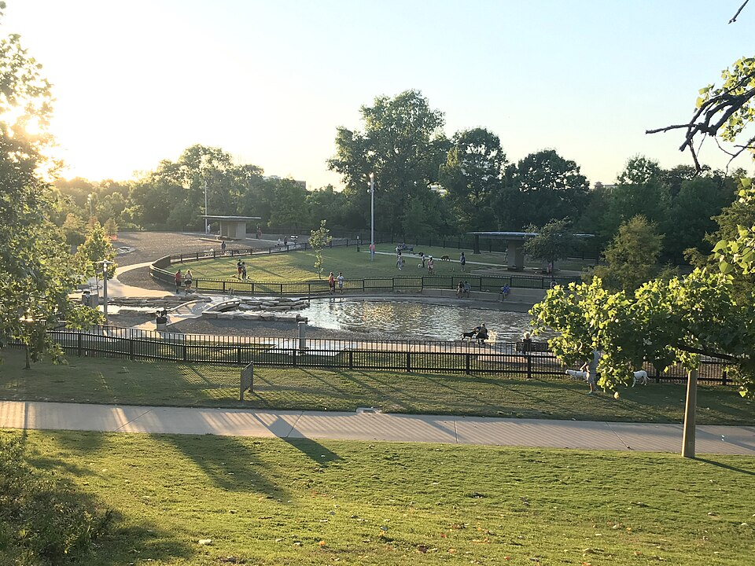

Johnny Steele Dog Park (Buffalo Bayou) Check status
- Fenced Yes — ~2 acres; separate large & small areas
- Water Yes — pond in each section; wash stations; dog spigots
- Small-dog area Yes (BBP: dogs >25 lb / >15 in not in small area)
- Hours Normally 7 a.m. – 8 p.m.; Tue 7–4 closed; Fri 1–2:30 pond clean — verify; storm closure posted
Opened 2015 as part of Buffalo Bayou Park. City lists it on the HPARD dog-parks page; day-to-day ops are BBP.